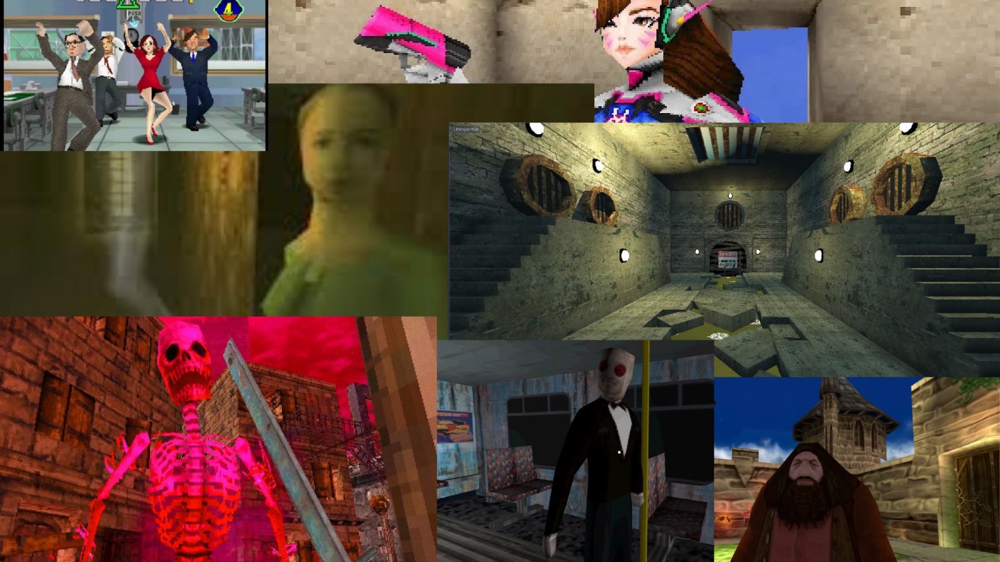
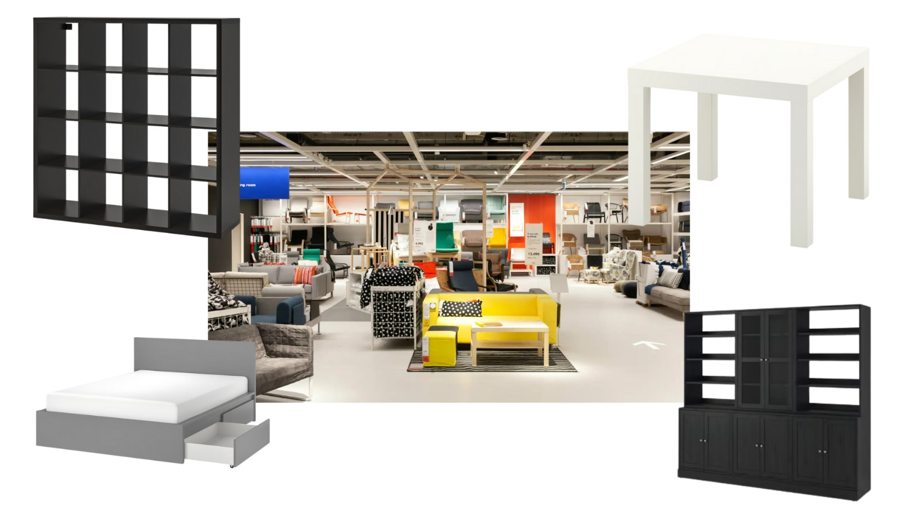
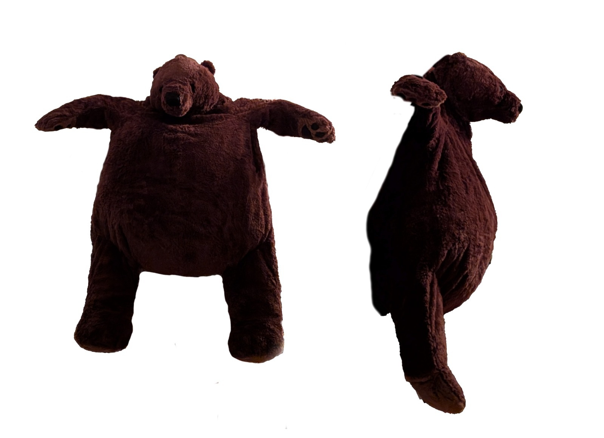
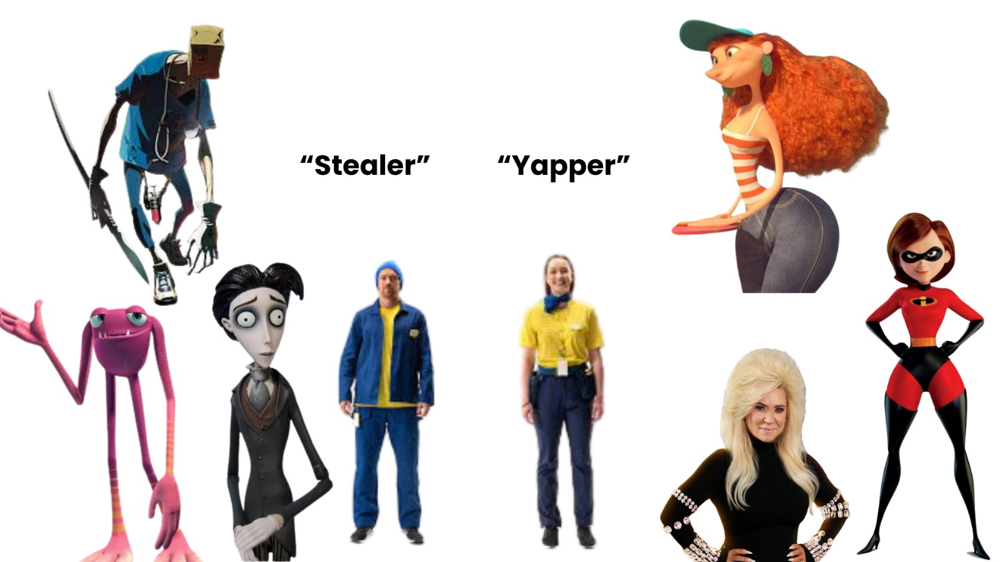
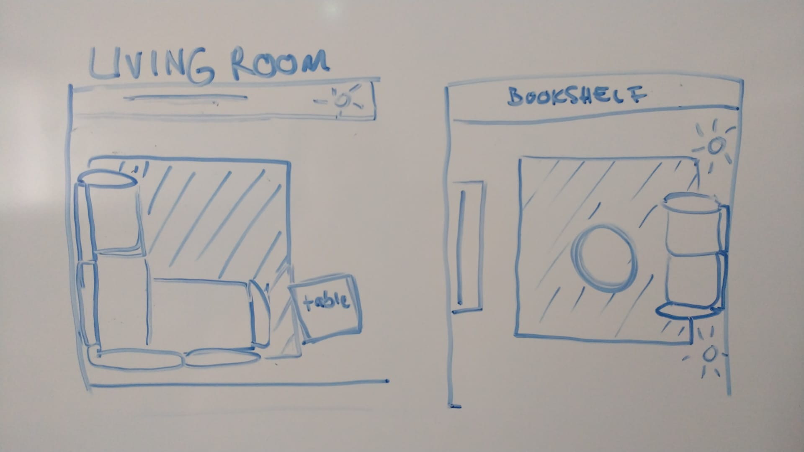
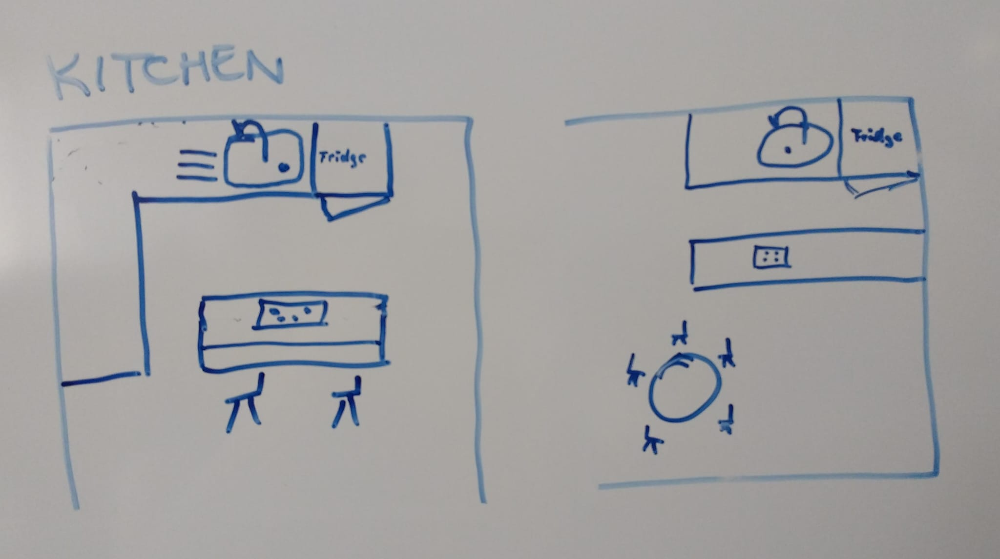
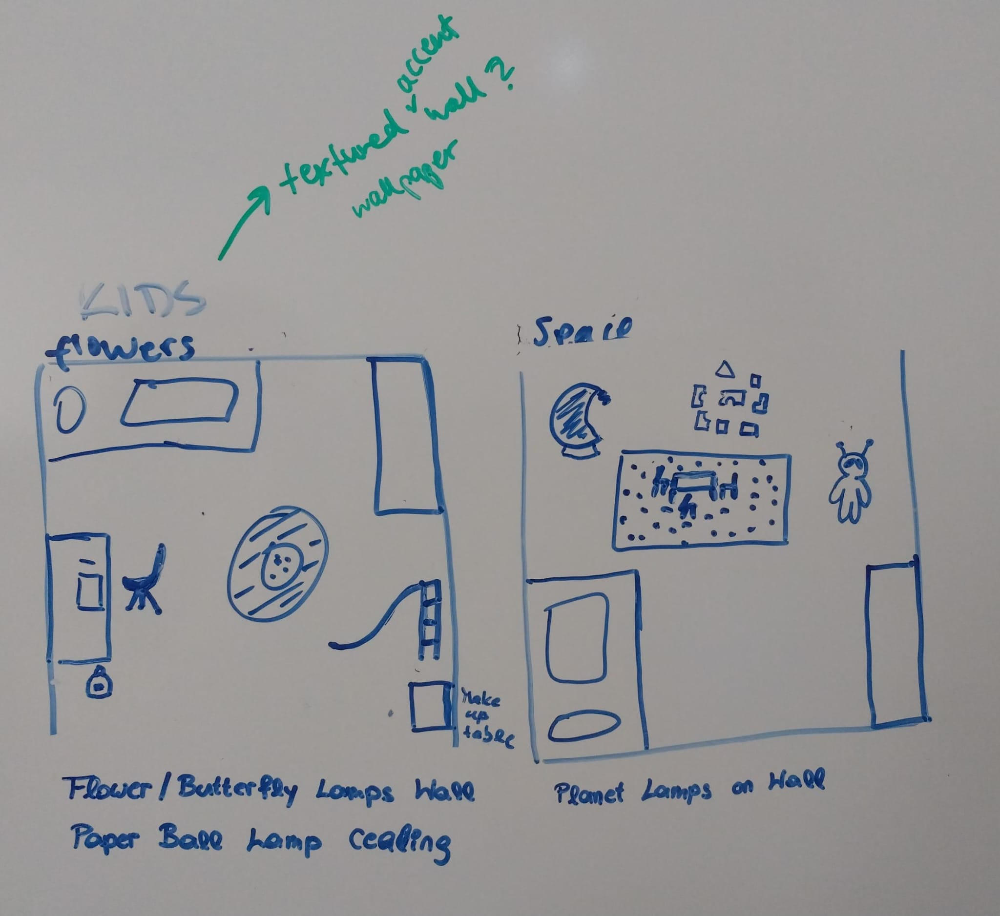
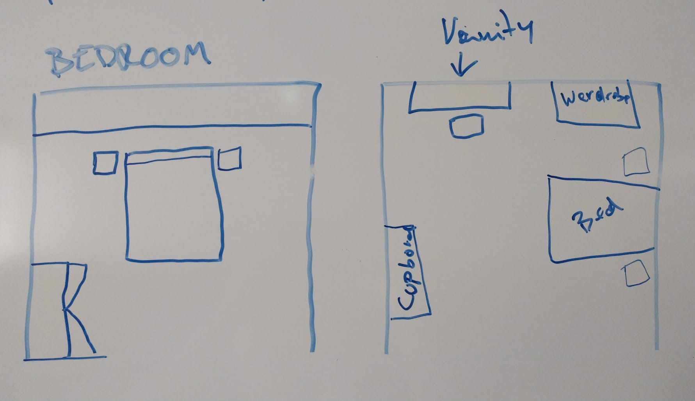
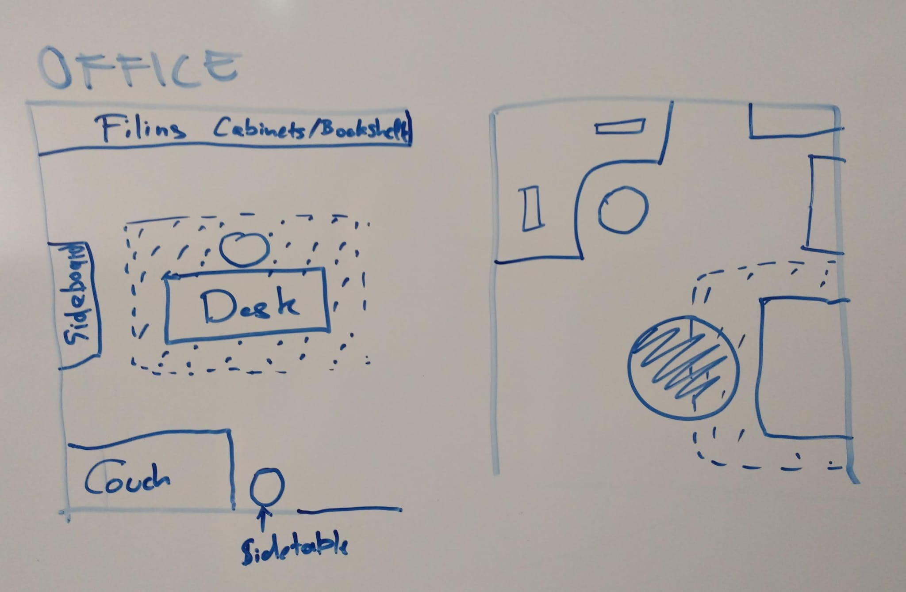
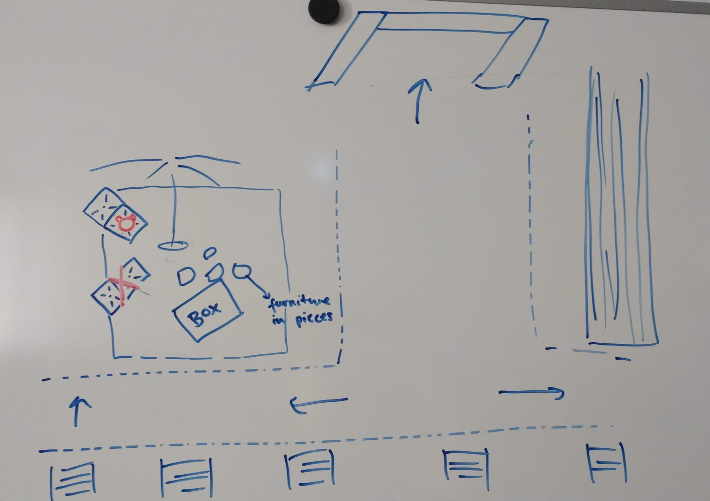

In the game the player finds themselves in an IKEA warehouse, where they are met with their stuffed animal companion, Björn. He tells the player that they can escape by building furniture out of parts they find in the store. This starts the quick tutorial to show the players the controls work. Afterward, the player walks through to the level entrance, and find themselves in an IKEA store, which is maze-like. The player goes through rooms to find furniture pieces, pick them up, and take them to the end of the maze to build. The employees stop them by either stealing furniture back, or trapping them in conversation and draining their energy.
You fell asleep in an IKEA...reading a manual, it seems. The lawnchair was strangely comfortable. There is a stuffed bear talking to you, telling you his name is Björn, and he will help you find your way out. To get out of here, Björn tells you, you need to make your way through the store and find furniture parts. Once you reassemble all the broken furniture, you can find your way out! Watch out, some employees might not like you tampering with the furniture or looking too confused. Something feels off...are you sure you woke up?
We want to create a VR game that is a procedurally generated 'dungeon' - but want to make it eerie as well as fun. It should be a simplistic game that has a nostalgic PS1 style and just be a fun way to explore VR.
We want to have a low-poly, nostalgic style that reminds of old PS1 games. Moodboards for this and the furniture:
 Characters
We have Björn (the companion, the bear) for which we use the Djungelskog plushy from IKEA as a reference, as he is meant to be a stuffed animal come to life in game.
Our two employees (enemies) are the 'stealer' and the 'yapper' - the stealer takes furniture pieces back from the player if they are hit. He is fast, slim and quippy. The 'yapper' is a conversaionalist (service industry style), she traps the player in social norms aka the conversation and drains the player's energy (health).
Our plan is to create an eerie and slightly intimidating sound environment. Not full horror—just enough for the player to feel the size and emptiness of the building, especially at the start in the warehouse. We want them to be aware that something feels a bit off, but not scared or overwhelmed. As the game goes on, players will find comfort in their companion character, who has a calming and friendly sound design. This contrast helps the player feel more grounded and safe over time. We’re also using sound to give personality to the employees in the building. Their voices, movements, and little audio cues will help players tell them apart and understand their behavior better. And when it comes to collecting and arranging furniture parts, there will be soft and reassuring sounds. These moments should feel clear and satisfying, giving the player a small sense of peace and progress. Overall, sound plays an important role in setting the mood of our game and in guiding the player—from feeling alone and alert to feeling more at ease when doing the right things.
These are the sketches for the basic room plans we have, 2 types of each type of room, which will all be prefabs that repeat themselves in the maze.
    Warehouse (Tutorial) Sketch
